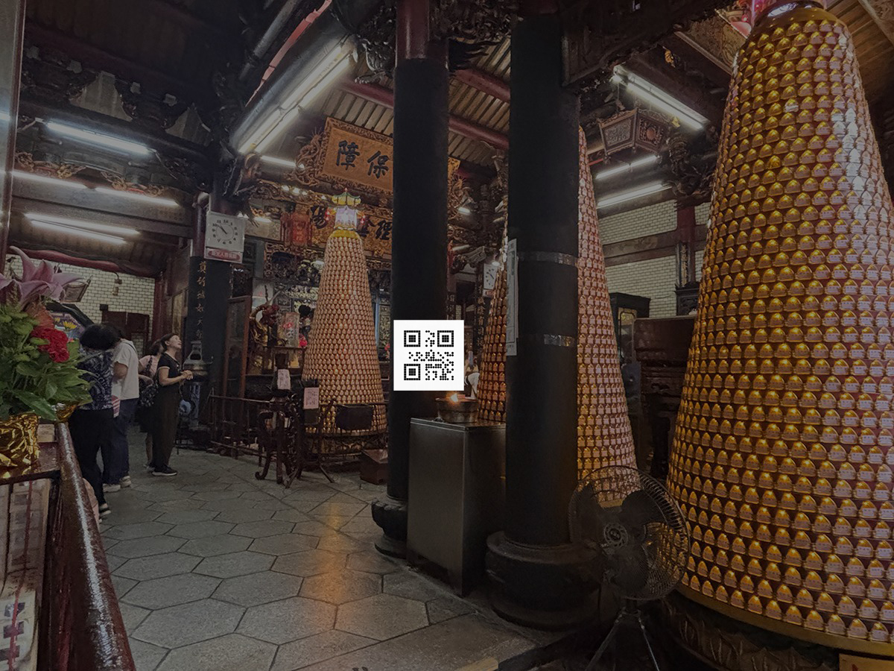
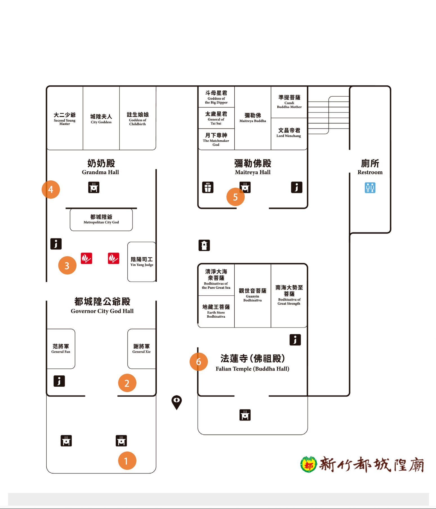

Location — 01
1
公爺殿・正入門
B0
廟前廣場
廟宇正入門處，人流最密集的核心區域。立式指標整合 QR Code，提供廟宇全區地圖與完整參拜流程說明，作為導覽的主要入口。
QR Code 位置規劃 · 搭配 THEOUT 無制設計 指標系統
在無制設計現有的 W（如廁路線）與 B（參拜路線）指標牌上預留 QR Code 空間，以最小改動讓數位導覽融入既有系統。
請無制設計另行規劃一套 P（導覽點）專用標誌，設置於各殿宇入口（如奶奶殿、公爺殿），讓訪客掃描獲得該區域的空間導覽內容。
若前述方案不可行，另行委製獨立立牌，依現場勘查照片確認的位置擺放，搭配無制設計的指標節點。
廟宇正入門處，人流最密集的核心區域。立式指標整合 QR Code，提供廟宇全區地圖與完整參拜流程說明，作為導覽的主要入口。

中央通廊左側門框旁，訪客進入廟宇的第一接觸點。QR Code 提供全場導覽起點說明、參拜流程總覽，以及化妝室方向指引。

廟宇中央點香區，參拜動線核心節點。中間主柱上整合 QR Code，連結點香禮儀說明、城隍爺神明介紹，以及香爐使用說明。

廟宇外側小門，連接奶奶殿的分流點。拱門右側紅板旁整合 QR Code，提供奶奶殿說明與參拜路線圖。

通往彌勒殿、太歲殿的入口。大門入口左方整合 QR Code，提供彌勒殿介紹、太歲安奉說明，以及前往金爐的方向指引。

法蓮寺出口與如廁路線交匯處。紅門左牆或右牆可挑一處放置 QR Code，提供法蓮寺（佛祖殿）介紹說明。
